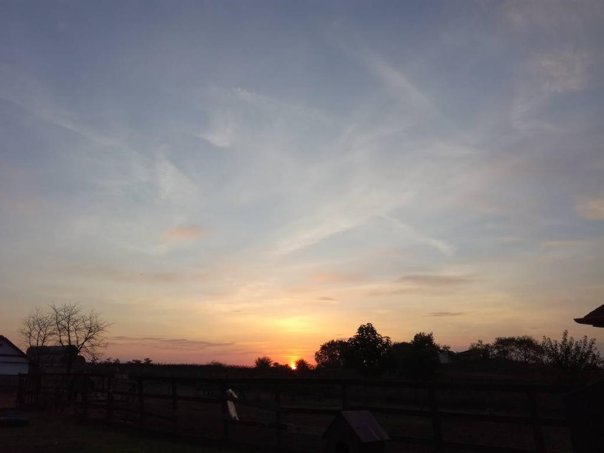
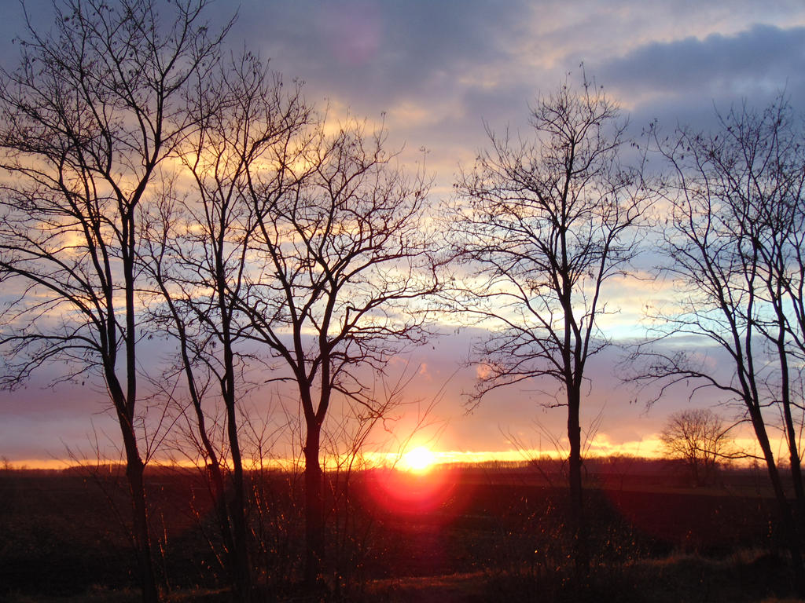
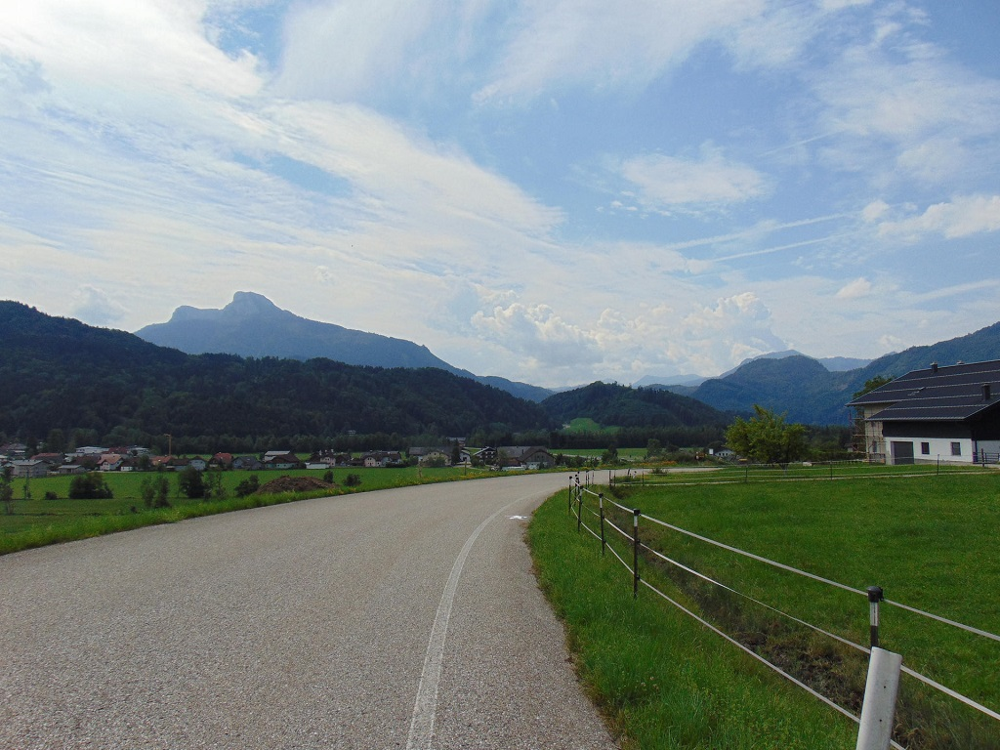
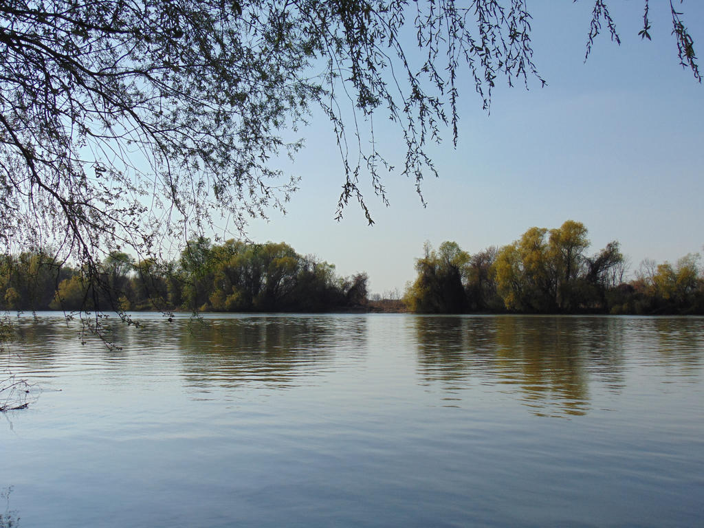
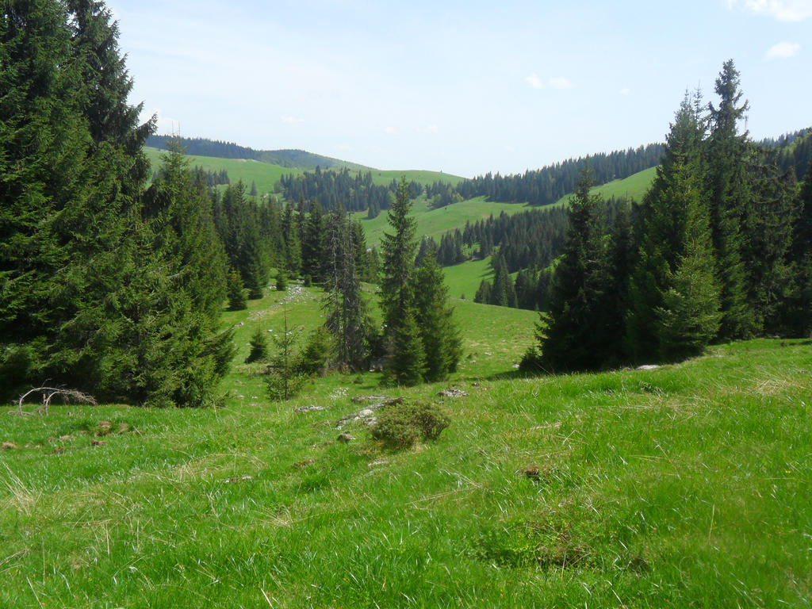

Főoldal
Önéletrajz
Órarend
Videógyűjtemény
Sakktábla
Virágok
1. Fekete-fehér cseresznyevirág
2. Napsütéses
3. Cseresznyevirág
4. Ibolya
5. Bolyhos növény
6. Makró virágzás
7. Ébredező tavasz
8. Rózsaszín bimbók
9. Orgona
10. Lila virágban bogár
Naplementék
1. Vakító fények

2. Az eltűnő Nap utolsó sugarai
3. Felhőket takarva

4. A Nap a horizonton
5. Nyári naplemente
Tájképek

1. Felhők felett
2. Táj Ausztriában
3. Móló

4. Tisza-tó

5. Táj fenyőkkel